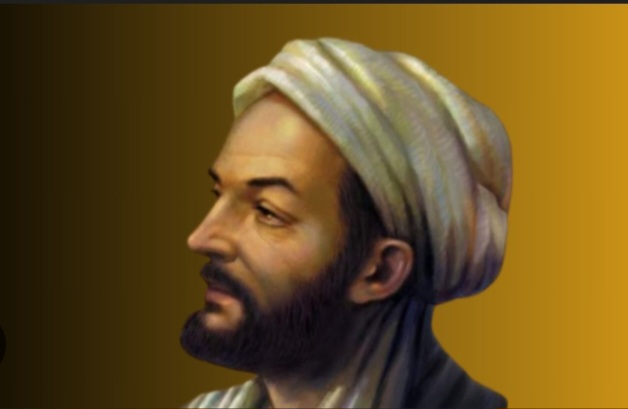
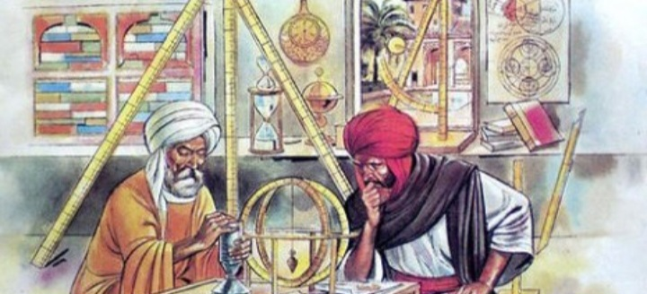
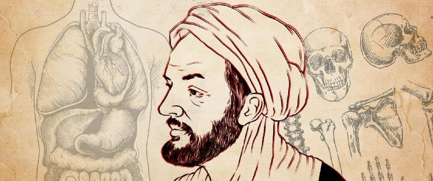

sejumlah tokoh muslim diketahui berjasa dalam dunia sains beberapa puluh hingga ratusan tahun lalu. beragam pemikiran mereka pun menjadi dasar bagi kemajuan sains saat ini. salah satu tokoh muslim yang berjasa dalam Dunia sains adalah abu ali al-hussain ibn abdallah ibn al-hassan ibn al-ali ibn sina.Ibnu Sina atau yang di dunia barat dikenal Aviccena adalah Filsuf dan dokter terkemuka di dunia islam abad pertengahan.
Beliau juga merupakan salah satu ilmuan dan filsuf muslim yang menerapkan logika filsafat dalam Teologi islam. sejarah juga mencatat, Ibnu Sina telah menghasilkan ratusan karya tulisan dalam berbagai bidang ilmu pengetahuan termasuk Matematika, Geometri, Astronomi, Fisika, Kimia, Metafisika, Filologi, bahkan musik dan sastra. memang kehebatannya tak diragukan lagi, sampai-sampai dikenal sebagai Ahli Kedokteran Modern pada abad pertengahan.
Ibnu Sina mendapat gelar The Father of Farmacology (Bapak Farmalogi) dan Al-Syekh Al-Rais Al-Thibb (Mahaguru Kedokteran). Tidak mengherankan karena salah satu karyanya yang terkenal Al-Qannun fi Al-Thibb (The Canon of Medicine) sudah diterjemahkan dalam 15 bahasa dunia. Ibnu sina juga disebut sebagai dokter pertama yang memperkenalkan eksperimen dan hitungan cermat berbagai jenis penyakit menular berikut dengan cara-cara menjinakkannya. Selain itu, Ibnu Sina-lah yang memperkenalkan teknik karantina sebagai upaya membatasi penularan Virus pertama kalinya.
Memang semasa hidup beliau, Ibnu Sina memiliki ketertarikan di berbagai bidang ilmu, mulai dari bahasa dan sastra, lalu Geometri, logika, matematika, sains, fiqh, hingga beliau tertarik pada bidang ilmu kedokteran yang mengharumkan namanya. Bahkan beliau bukan hanya mendalami Ilmu Dunia, beliau juga Menghafal Al-Qur'an sejak usia 5 tahun dan menamatkannya pada usia 10 tahun.Buah dari mempelajari banyak bidang keilmuan inilah yang membawanya pada berbagai gelar yang disematkan untuknya.
Banyak sekali ya yang sudah saya jelaskan di atas tapi sudah tidak usah berlama-lama langsung saja kita bahas, yuk mari kita bahasa 1 per 1 agar teman-teman dapat memahami isidan konteks dari web ini. jangan lama-lama langsung saja mari kita bahas.
kehidupan dan biografi ibnu sina
Ibnu Sina atau (Abu Ali al-Husain bin Abdullah bin Sina) lahir pada tahun di Afsyanah daerah dekat Bukhara (sekarang wilayah Uzbekistan) dan meninggal pada bulan juni tahun di Hamadan, persia (Sekarang Iran). pada masa itu Kesultanan Samaniyah di Bukhara sedang diguncang konflik internal, setelah sebelumnya menjadi salah satu sentral kebudayaan menyaingi Baghdad. Ayahnya berasal dari Balkh, sedangkan ibunya berasal dari desa setempat di sekitar Bukhara.
Penyelidikan filosofisnya kompleks, Menggabungkan perspektif Aristotelian dan Platonis, dengan teologi muslim.Paradigmanya canggih, membagi semua pengetahuan menjadi teori (Matematika, fisika, kimia, astronomi dan metafisika) dan ilmu praktis (Filsafat, etika, ekonomi dan politik).sementara pandangan rasionalnya tentang hakikat tuhan dan kehidupan, membuatnya menyimpulakan bahwa ada tempat untuk jasmani dan roh.
Di dunia filsafat pun, Ibnu Sina menyabet gelar "Guru Ketiga" setelah Aristoteles dan Al-Farabi. Namun, pemikiran-pemikiran Yunani berhasil memengaruhinya, seperti seperti untuk mengenal dan membuktikannya adanya Tuhan, Ibnu Sina Menggunakan Ilmu matematika yang berdasar dari pandangan Pythagoras Hal ini membuat Imam Al-Ghazali merasa ia telah menyimpang dari ajaran islam dan membuat sebuah buku berjudul Tahafut al-Falasifah(Kerancuan para Filosof) yang berisi kritikan pada Ibnu Sina serta Al-Farabi.
Selain itu, Di bidang geografi, ibnu sina mampu menjelaskan bagaimana sungai-sungai berhubungan serta kaitannya dengan gunung beserta lembah. Bahkan, ia berhasil menyatakan suatu Hipotesis atau Teori yang tidak bisa dilakukan oleh ilmuan Yunani dan Romawi kuno pada masa Aristoteles masih hidup.
Dalam teks medisnya, Ibnu Sina juga mengidentifikasi penyakit menular seperti TBC. Beberapa abad sebelum Louis Pasteur, dia juga menemukan kemungkinan penyakit menyebar lewat Air dan Tanah. Beliau bahkan menyelidiki kesehatan Emosional seseorang, jauh sebelum Teknik Biofeedback diperkenalkan. Kontribusi lainnya, antara lain Deskripsi menigitis, berbagai bagian mata dan katup jantung, dan bagaimana saraf berkontibusi pada nyeri otot.
Ensiklopedia kedokteran pada masa itu
Dalam Bukunya, ia mengemabngkan sistem logikanya sendiri, atau Logika Avicennian. dalam matematika, Ibnu Sina menjelaskan tentang konsep Aritmatika dengan demikian, Manusia dipanggil untuk mengembangkan dan menggunakan aturan logika untuk memenuhi kebutuhannya. Konsep dasar logika yang ibnu sina andalkan dikembangkan dari gurunya, Aristoteles. Dari konsep sang guru, dia menambahkan pandangannya tentang pentingnya kebutuhan manusia untuk mendapatkan pengetahuan untuk kemajuan hidupnya. meskipun semua kecerdasan berasal dari Allah Swt, menurutnya, kemampuan seseorang untuk memperoleh pengetahuan menentukan cara pandangannya.
Untuk mencapai itu, manusia peru meningkatkan kehidupan mereka dengan mengembangkan keseimbangan antara kebutuhan Fisik dan Spiritual , dengan iman menjadi salah satu dari beberapa bahan utama yang menopang kehidupan.
Menurut beliau, bahwasannya Allah Swt sebagai titik tertinggi di atas Intelek murni, tidak bertentangan dengan upaya manusia untuk mencari ilmu pengetahuan. Sebab dengan ilmu pengetahuan itu, manusia justru dapat memahami Keagungan Allah swt.
Bukan hanya itu melansir dari Britannica, selain dalam dunia medis, Ibnu Sina dikenal sangat ahli dalam Sertifikasi. Namun, dia secara aktif berusaha untuk memisahkan obat dari klaim yang kurang dapat dipertahankan, dan membandingkannya dengan orang-orang di masa itu.Di bidang Astronomi , Ibnu Sina melakukan observasi, menemukan perangkat yang mirip dengan skala vernier untuk meningkatkan akurasi instrumennya.Bahkan, Beliau mengedit almagest, menambahkan gambar untuk menggambarkan metode Geometri ptolemy. Beliau juga memberikan kontribusi asli untuk analisis Matematika Musik.
Apa saja ya pemikiran Ibnu Sina ?
Ibnu Sina memberi sumbangan besar atas perkembangan awal Filsafat Islam , terutama dalam tema Logika,Etika, dan Metafisika. Sebagian besar karyanya ditulis dalam bahasa Arab yag merupakan lingua franca di Timur Tengah dan beberapa ditulis dalam bahasa persia. Skema Emanasi Neoplatonis yang diangkat Ibnu Sina menjadi landasan Fundamental dalam Ilmu Kalam. Selain itu menyebut nama Ibnu Sina tidak bisa lepas dari karya terbesarnya Kitab Al-Syifa dalam bidang kedokteran. setelah ditulis, Al-syifa sudah beredar di eropa dalam terjemahan parsial dalam bahasa latin denagn judul Sufficientia, dan beberapa peneliti mengidentifikasi bahwa pengaruh Ibnu Rusyd,tetapi surut akibat oleh Dekit Paris 1210 dan 1215 yang menganggap beberapa ajaran atau buku sebagai Heretik.
Metafisik
Filsafat dan islam metafisika islam awal, dijiwai karena dengan teologi islam, membedakan lebih jelas daripada Aritotelilianisme antara esensi dan eksistensi. sedangkan keberadaan adalah domain dari kontingen dan disengaja, esensi bertahan dalam makhluk luar disengaja. Filsafat Ibnu Sina, terutama bagian yang berkaitan dengan Metafisika, berutang banyak pada Al-Farabi .pencarian untuk filsafat Islam definitif terpisah dari Okasionalisme dapat dilihat pada apa yang tersisa dari karyanya. setelah memimpin Al-Farabi, Ibnu Sina memulai penyelisikan penuh kedalam pertanyaan dari makhluk, dimana ia membedakan antara esensi(mahiat) dan keberadaan (Wujud).
Teologi
Ibnu Sina adalah seorang muslim yang taat dan berusaha untuk mendamaikan filsafat rasional dengan Teologi Islam.Tujuannya adalah untuk membuktikan keberadaan tuhan dan ciptaanya dari Dunia ilmiah dan melalui akal dan logika . pandangan Ibnu Sina tentang Teolohi Islam (Dan Filsafat) yang sangat berpengaruh, membentuk bagian dari Inti Kurikulum di sekolah-sekolah Agama islam sampai abad ke-19. Ibnu Sina menulis sejumlah risalah singkat berurusan dengan Teologi Islam. Risalah ini disertakan pada nabi (Yang ia dipandang sebagai "filsuf terinspirasi"), dan juga pada berbagai penafsiran ilmiah dan filosofis dari Qur'an, seperti bagaimana Quran Kosmologi sesuai dengan sistem filsafat sendiri. secara umum risalah ini terkait tulian-tulisan filosofis ide-ide agama islam, misalnya: Akhirat tubuh.
Ada petunjuk singkat sesekali dan sindiran dalam bukunya lagi bekerja, Namun yang Ibnu Sina dinggap filsafat sebagai satu-satunya cara yang masuk akal untuk membedakan buatan nyata atau ilusi. Beliau menyatakan ini lebih jelas karena sebagian besar waktu ia menulis karya pendek yang berkonsentrasi pada menjelaskan teori-teori tentang filsafat dan teologi jelas, tanpa menyimpang ke mempertimbangkan hal-hal Epistemologis yang hanya bisa dipertimbangkan oleh filsuf lain.
eksperimen pikiran
sementara ia dipenjara di Kastil Fardajan dekat hamadan,Ibnu Sina menulis yang terkenal "Mengambang Man"nya-benar jatuh man-percobaan berpikir untuk menunjukkan manusia kesadaran diri dan kekukuhan dan tidak material jiwa. Ibnu Sina percayanya "Mengambang Man" eksperimen pikiran menunjukan bahwa jiwa adalah Substansi ,dan mengklaim manusia tidak dapat meragukan kesadaran mereka sendiri, bahkan dalam situasi yang mencegah semua Input data sensorik. pikiran percobaan kepada pembacanya untuk membayangkan diri mereka diciptakan sekaligus sementara ditangguhkan di udara, terisolasi dari semua Sensasi, yang mencakup tidak ada Kontak sensorik bahkan dengan tubuh mereka sendiri. beliau berargumen bahwa, dalam skenario, kita masih akan memiliki kesadaran diri. karena dapat dibayangkan bahwa seseorang, ditangguhkan sementara udaa terputus dari pengalaman rasa, masih akan mampu menentukan eksistensi sendiri, poin pemikiran percobaan untuk kesimpulan bahwa jiwa adalah adalah Kesempurnaan, independen dari tubuh dan immaterial zat.
ke bahasa eropa pada
Kitab Qanun Fi Al-Tibb atau The Canons of Medicine karangan Ibnu Sina telah menjadi Ensiklopedia terlengkap dan terbesar dibidang kedokteran, yang memuat jutaan istilah. di dalamnya termuat Risalah pengobatan perpaduan dari sumber-sumber pengobatan kuno dan tabib muslim.
Bahkan dari abad ke-12 sampai ke abad 17, kitab Qanun telah menjadi"Guru pembimbing" bagi ilmu kedokteran dibarat.Dr.William Osler, penulis buku The Evolution of Modern Science, menulis:
"Qanun telah mewariskan sesuatu, dan menjadi seperti" Kitab suci dunia kedokteran dalam jangka waktu sangat lama, "melebihi buah karya apapun di dunia ini"
5 Karya dan sumbangsih beliau semasa hidupnya.
Karya Ibnu Sina yang terkenal menjadi tonggak penting dalam sejarah peradaban islam dan dunia.dalam rekam hidupnya, tercatat 240 karya dari Ibnu Sina mulai dari kedokteran,fisika, astronomi,matematika, musik, hingga puisi. Ibnu Sina memang dikenal sangat cerdas dalam berbagai bidang dan bahkan beliau jago membaca Al-Qur'an dan bahkan Hafidz 30 Juz. saat berumur 16 tahun beliau telah menguasai Ilmu medis kontemporer dan mempraktikannya saat mengobati Sultan Bukhara.
Karya Ibnu sina yang terkenal
Beberapa karya Ibnu Sina yang terkenal dan cukup berpengaruh pada sejarah peradaban islam serta dunia barat antar lain sebagai berikut :
1.Al-Qanun fi al-tibb(The canon of medicine)
Al-Qanun fi Al-Tibb dapat dikatakan sebagai Masterpiece dari Ibnu Sina. Buku ini merupakan sebuah Ensiklopedia kedokteran yang mencakup diagnosis,pengobatan, dan farmakologi.Ibnu Sina menyususun buku ini berdasarkan pengamatan dan pengalamannya sebagai dokter. the canon of medicine diterjemahkan ke dalam berbagai bahasa dan digunakan sebagai buku rujukan di Universitas Eropa selama berabad-abad.
2. kitab al-shifa(The book of healing)
Karya lainnya adalah kitab Al-Syifa. Buku ini merupakan Ensiklopedia filsafat dan sains yang membahas berbagai bidang, seperti Logika,Fisika, Matematika, dan Metafisika. Kitab Al-Syifa menunjukkan pemikiran sistematis Ibnu Sina yang memadukan Filsafat yunani dengan Ajaran Islam. karya ini menjadi salah satu kontribusi terbesarnya dalam pengembangan ilmu pengetahuan di dunia islam dan barat.
3. risalah fi al-nafs(treasite on the soul)
Dalam risalah ini, Ibnu Sina menjelaskan konsep jiwa dalam Perspektif filsafat dan teologi. ia menggambarkan hubungan antara jiwa dan tubuh, serta peran jiwa dalam memahami Alam semesta. Tulisan ini menjadi inspirasi bagi para Filsuf muslim maupun barat, seperti Thomas Aquinas.
4.kitab al-najat (The book of salvation)
Buku ini adalah ringkasan dari Kitab Al-Syifa yang lebih mudah dipahami. Ibnu Sina menyusun Menyusun kitab Al-Najat untuk menjelaskan Filsafatdan Metafisika dengan cara yang lebih praktis lagi.
5.Al-adwiyah al-Qalbiyyah (Cardiac remedies)
Karya ini fokus pada Ilmu Farmakologi dan pengobatan penyakit jantung. Ibnu Sina menjelaskan secara rinci penggunaan berbagai ramuan herbal untuk mengatasi Ganggua jantung dan meningkatkan kesehatan. Buku ini menjadi bukti kedalaman ilmu yang Ibnu Sina miliki dalam Farmasi dan Pengobatan. hal ini juga menegaskan reputasinya sebagai dokter tekemuka.
Tabel penemuan Ibnu Sina sepanjang hidupnya.
penemuan-penemuan Ibnu Sina telah meninggalkan warisan yang jauh melampaui zamannya. penemuan ini menjadi pondasi bagi pengobatan dan Filsafat modern , dengan banyak cendikiawan yang masih merujuk pada pemikirannya. bahkan, banyak lembaga yang dinamai menurut namanya untuk merayakan kontribusinya terhadap sains dan pendidikan.Ibnu Sina juga telah menerima berbagai penghargaan secara Anumerta . banyak negara merayakan warisannya melalui acara tahunan atau hari khusus untuk mengakui pengaruhnya yang besar terhadap pengetahuan.bahkan hingga saat ini, beliau dihormati sebagai Pelopor yang menjembatani kebikjasanaan kuno dengan penemuan-penemuan baru.
Nah dibawah ini adalah tabel penemuan yang sudah saya buatkan agar ringkas dan bisa diambil imunya:
| No. | penemuan | Pembahasan | ||
| 1. | Al-Qanun Fi Al-Tibb | Ensiklopedia kedokteran | ||
| 2. | Kitab Al-Syifa | Filsafat, logika dan fisika | ||
| 3. | Risalah Fi Al-Nafs | Psikologi & jiwa | ||
| 4. | Kitab Al-Najat | Ringkasan Filsafat | ||
| 5. | Kitab Al-Qalbiyyah | Ilmu Farmakologi | ||
| Ilmu kedokteran yang ditemukan ini memang sangat membantu hingga zaman sekarang. | ||||
Kontribusi kedokteran Ibnu Sina di dunia islam lebih lanjut terlihat dalam usahanya untuk memandang manusia secara keseluruhan, sebagai Entitas tunggal, dimana raga dan jiwabersatu mencari hubungan kosmis total dimana ia hidup. Dengan kata lain, semangat pemersatu islam inilah yang menjadikan Kedokteran Ibnu Sina lama dalam pangkuan peradaban islam sepanjang sejarah.
"Tidak ada penyakit yang tidak dapat disembuhkan, kecuali rasa malas." "tidak ada obat yang tidak berguna, kecuali kekurangan ilmu pengetahuan."
~ Ibnu Sina
sebenarnya tidak hanya Ibnu Sina seorang tokoh yang berpengaruh terhadap kedokteran barat ada juga tokoh lain seperti Al-Razi . Namun Ibnu Sina ,mungkin adalah yang paling terkenal. Pengaruh Ibnu Sina tidak hanya pada bidang Kedokteran, dalam filasafat Ibnu Sina termasuk tokoh rujukan Masyarakat barat abad pertengahan. sehingga secara tidak langsung revolusi sains(The Scientific Revolution) di barat sebenarnya berakar dari transver pengetahuan para sarjana muslim diantaranya Ibnu Sina.
mengenal lebih dekat dengan beliau
Beliau memang sangat, sangat berpengaruh dalam Ilmu Kedokteran baik didunia islam hingga dunia bahkan karyanya ini digunakan dalam pengajaran ilmu kedokteran di universitas eropa dan karya-karya kitabnya ini banyak ditransletkan ke dalam berbagai bahasa. melaui karyanya ini kita tidak boleh untuk berhenti belajar dan terus berusaha agar nantinya kita sebagai generasi penerus bangsa dapat menciptakan sebuah karya yang sampai ke panggung Internasional. agar kamu mendapatkan informasi yang lebih lengkap dan relevan kamu bisa meliat video Youtube berikut ini.
Lihat video berikut :
jika anda ingin penjelasan lebih lengkap lagi klik saja tautan berikut wikipedia/Ibnu Sina
Kesimpulan Akhir :
Ibnu sina bukan sekedar tokoh sejarah, beliau adalah Jembatan ilmu pengetahunaantara peradaban timur dan barat.berikut poion-poin penting yang meringkas kehebatan beliau.
- ilmuan polimatik: Beliau hampir menguasai hampir seluruh cabang ilmu di zamannya, mulai dari kedokteran, filsafat, astronomi, matematika, hingga sastra (puisi).
- Mahakarya kedokteran: Kitab "Al-Qanun" (The Canon Of Medicine) menjadi buku standar kedokteran di seluruh Universitas di eropa selama lebih dari 500 Tahun.
- Penumu konsep karantina : jauh sebelim teknologi modern ada, Ibnu Sina sudah menyadari bahwa penyakit bisa menular melalui udara dan kontak fisik, serta menyarankan metode isolasi (Karantina) selama 40 hari.
- Filosofi & Logika: Beliau berhasil menyatukan Logika aristoteles dengan pemikiran islam, yang kemudian memengaruhi banyak filsuf besar dunia dimasa depan.
Pesan utama :
warisan terbesan Ibnu Sina bukanlah sekedar teori, melainkan semangat untuk terus belajar dan meneliti. beliau membuktikan bahwa dengan ilmu, seseorang bisa tetap "hidup" dan memberi manfaat bagi menusia meski raganya sudah tiada berabad-abad.
Apa selanjutnya ?
Sampai disini saja penjelasan yang bisa saya berikan. semoga informasi yang saya berikan ini dapat menjadi ilmu yang bermanfaat ya. terima kasih sampai ketemu lagi, semoga anda semua sehat selalu ya.